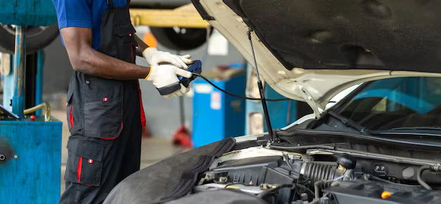

How Often Should You Service Your Car in Madurai? A Complete Maintenance Guide
One of the most common questions car owners ask is:
“How often should I service my car?”
In a city like Madurai—where high temperatures, traffic congestion, dust, and road conditions directly impact vehicle health—regular car servicing is not just recommended, it is essential.
This detailed guide will help Madurai car owners understand ideal service intervals, warning signs, climate impact, and cost-saving maintenance tips, so your vehicle stays reliable, fuel-efficient, and safe.
Why Car Service Frequency Matters in Madurai
Madurai’s environment places extra stress on vehicles:
- High ambient temperatures strain engines and AC systems
- Dusty roads clog air filters faster
- Stop-and-go traffic accelerates brake and clutch wear
- Heat shortens battery life
Because of these factors, cars in Madurai often need more frequent inspection and maintenance compared to cooler or less congested regions.
Standard Car Service Intervals (General Rule)
While manufacturers provide service schedules, real-world conditions in Madurai require practical adjustments.
Basic Guidelines
- Every 5,000 km: Light inspection / oil check
- Every 10,000 km: Periodic Maintenance Service (PMS)
- Once a year: Full vehicle health check
- Before long trips: Preventive inspection
At Zac Motors, service intervals are customized based on usage, vehicle age, and driving conditions.
What Is Periodic Maintenance Service (PMS)?
Periodic Maintenance Service is the backbone of car care. It focuses on preventive maintenance rather than repairs.
PMS Typically Includes
- Engine oil & oil filter replacement
- Air, fuel & cabin filter inspection
- Brake inspection & fluid check
- Battery health check
- Coolant & washer fluid top-up
- Belt, hose & underbody inspection
- Road test & quality check
Skipping PMS often results in engine damage, overheating, poor mileage, and unexpected breakdowns.
How Driving Conditions Affect Service Frequency
Daily City Driving (Most Madurai Cars)
If your car is used daily within Madurai city:
- Frequent traffic
- Short-distance trips
- High engine idling time
Recommended: Service every 6 months or 7,000–8,000 km
Occasional / Weekend Use
For cars driven only on weekends or short distances:
- Fluids degrade even if kilometers are low
- Battery drains faster
Recommended: Annual service + mid-year inspection
Commercial or High-Usage Vehicles
For taxis, company cars, or frequent travelers:
- High engine load
- Faster wear and tear
Recommended: Service every 5,000–7,000 km
Signs Your Car Needs Immediate Service
Do not wait for your next scheduled service if you notice these warning signs:
- Check engine light is ON
- Reduced mileage
- Unusual engine noise
- Brake squealing or vibration
- AC cooling reduced
- Steering pulling to one side
- Dashboard warning indicators
Ignoring these signs can lead to major repair costs.
How Climate Affects Car Components in Madurai
Engine & Cooling System
High heat increases:
- Engine oil breakdown
- Coolant evaporation
- Overheating risk
Regular oil changes and coolant checks are critical.
Car AC System
AC systems work overtime in Madurai heat.
Without regular servicing:
- Gas leaks occur
- Compressor damage increases
- Cooling efficiency drops
Battery
Heat is the #1 enemy of car batteries.
Average battery life in Madurai:
- 2.5 to 3 years (vs 4–5 years in cooler regions)
Regular battery testing prevents sudden failures.
Car Service for New Cars vs Old Cars
New Cars (0–3 Years)
- Follow manufacturer PMS schedule
- Focus on preventive maintenance
- Maintain service records
Old Cars (4+ Years)
- Require frequent inspection
- Rubber parts & hoses degrade
- Suspension and brakes wear faster
Older cars in Madurai benefit from comprehensive inspections every 6 months.
Does Servicing Outside Authorized Centers Affect Warranty?
This is a common concern.
- Routine maintenance can be done at multi brand service centers
- Genuine parts & recommended oil grades must be used
- Major warranty claims depend on manufacturer policy
Professional multi brand service centers maintain service standards without unnecessary costs.
Cost-Saving Tips for Car Owners in Madurai
- Don’t Skip Preventive Maintenance
Minor servicing costs far less than major repairs.
- Fix Small Issues Early
Ignoring noise or warning lights increases expenses later.
- Choose Transparent Service Centers
Avoid workshops that push unnecessary part replacements.
- Maintain Service Records
Helps track vehicle health and improves resale value.
Why Computerized Diagnostics Matter
Modern cars rely on electronics.
Without diagnostics:
- Problems are guessed, not solved
- Costs increase
- Repeat failures occur
Advanced scanning ensures accurate diagnosis and faster resolution.
Common Car Problems Faced by Madurai Drivers
Why Madurai Car Owners Prefer Multi Brand Service Centers
- Affordable servicing
- Flexible service options
- Personalized attention
- Faster turnaround time
- All services under one roof
This approach is practical for both new and old vehicles.
Why Zac Motors Recommends Preventive Car Care
Zac Motors focuses on long-term vehicle health, not short-term fixes.
Their approach includes:
- Condition-based service scheduling
- Honest recommendations
- Transparent pricing
- Skilled multi brand technicians
This philosophy has earned trust among Madurai car owners.
Final Thoughts
There is no “one-size-fits-all” answer to car service frequency—especially in Madurai’s demanding environment.
The right service schedule depends on:
- Driving habits
- Vehicle age
- Climate conditions
- Road usage
Regular servicing is not an expense—it is an investment in safety, performance, and peace of mind.
- Car Service in Madurai
- Periodic Car Maintenance Madurai
- Best Car Service Center Madurai
- Car Maintenance Schedule Madurai
- Car Repair & Inspection Madurai